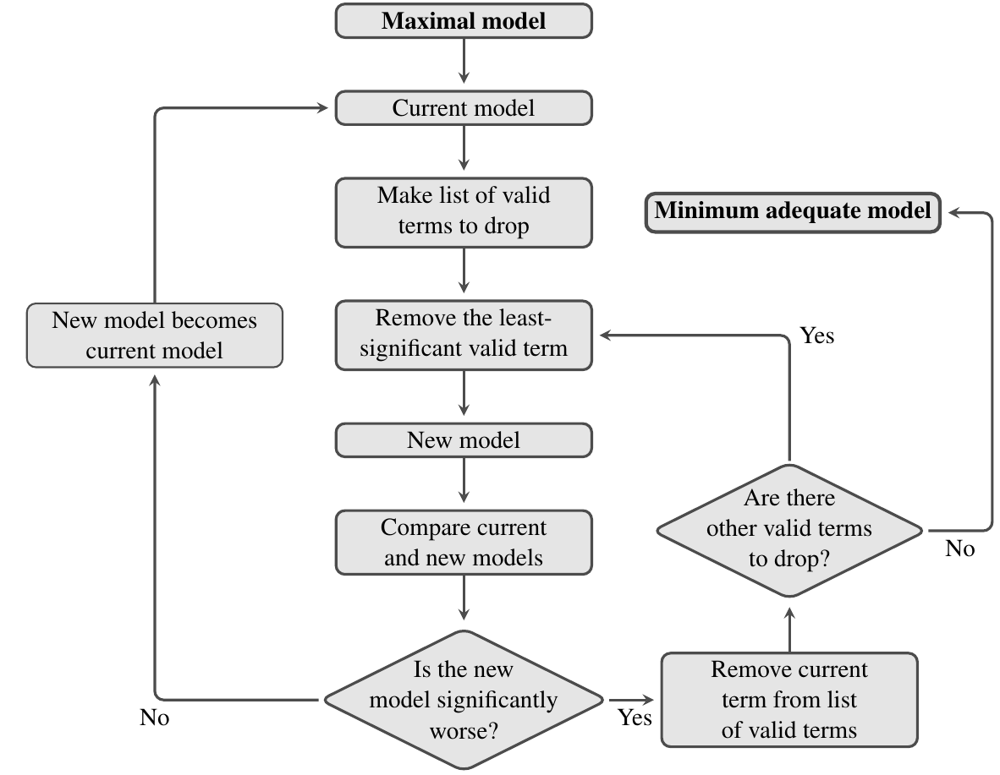

Model simplification#
“It can scarcely be denied that the supreme goal of all theory is to make the irreducible basic elements as simple and as few as possible without having to surrender the adequate representation of a single datum of experience.”
—Albert Einstein, Herbert Spencer Lecture, Oxford (1933) [Einstein, 1934]
Learning goals
By the end of this chapter you should be able to:
Apply systematic model simplification from maximal to minimum adequate models
Use nested F-tests and likelihood ratio tests to compare models rigorously
Apply information criteria (AIC, BIC) appropriately and interpret model weights
Balance parsimony, biological interpretability, and predictive performance
Avoid common pitfalls (overfitting, P-hacking, inappropriate comparisons)
Report simplified models transparently with justification for retained/dropped terms
Prerequisites
Before starting this chapter, you should:
Have covered regression with multiple predictors from Multiple variables
Have some understanding of interaction terms from Interactions — relevant if simplifying interaction models
Be comfortable interpreting model diagnostics and comparing nested models
Introduction#
In biology, we often use statistics to compare competing hypotheses in order to work out the simplest explanation for some data. This often involves collecting several explanatory variables that describe different hypotheses and then fitting them together in a single model, and often including interactions between those variables.
In all likelihood, not all of these model terms will be important. If we remove unimportant terms, then the explanatory power of the model will get worse, but might not get significantly worse.
Model simplification is not simplicity for its own sake: a reduced model must still represent the data adequately. We will use this principle to decide which terms can be removed.
The approach we will look at is to start with a maximal model — the model that contains everything that might be important — and simplify it towards the null model — the model that says that none of your variables are important. Hopefully, there is a point somewhere in between where you can’t remove any further terms without making the model significantly worse: this is called the minimum adequate model.

Chapter aims#
The main aim of this chapter[1] is to learn how to build and then simplify complex models by removing non-explanatory terms, to arrive at the Minimum Adequate Model.
The process of model simplification#
Model simplification is an iterative process. The flow diagram below shows how it works: at each stage you try and find an acceptable simplification. If successful, then you start again with the new simpler model and try and find a way to simplify this, until eventually, you can’t find anything more to remove.


As always, we can use an \(F\)-test to compare two models and see if they have significantly different explanatory power (there are also other ways to do this, such as using the Akaike Information Criterion, but we will not cover this here). In this context, the main thing to remember is that significance of the \(F\)-test used to compare a model and its simplified counterpart is a bad thing — it means that we’ve removed a term from the fitted model that makes it significantly worse.
An example#
We’ll be using the mammal dataset for this practical, so once again:
\(\star\) Start in your coursework project root.
\(\star\) Create a new blank script called code/Mymodel_simp.R. You will build it during the exercise; use the supplied model_simp.R if you need to compare or recover a complete example.
\(\star\) Download mammal_data.csv into data/, then load it into a data frame called mammals:
Run selected lines from your editor as you develop the analysis. When it is complete, run your script from the project root with Rscript code/Mymodel_simp.R; the supplied example runs as Rscript code/model_simp.R.
mammals <- read.csv('data/mammal_data.csv', stringsAsFactors = TRUE)
In previous chapters, we looked at how the categorical variables GroundDwelling and TrophicLevel predicted genome size in mammals. In this chapter, we will add in two more continuous variables: litter size and body mass. The first thing we will do is to log both variables and reduce the dataset to the rows for which all of these data are available:
#get logs of continuous variables
mammals$logLS <- log(mammals$LitterSize)
mammals$logCvalue <- log(mammals$meanCvalue)
mammals$logBM <- log(mammals$AdultBodyMass_g)
# reduce dataset to five key variables
mammals <- subset(mammals, select = c(logCvalue, logLS, logBM,
TrophicLevel, GroundDwelling))
# remove the row with missing data
mammals <- na.omit(mammals)
\(\star\) Copy the code above into your script and run it
Check that the data you end up with has this structure:
str(mammals)
'data.frame': 240 obs. of 5 variables:
$ logCvalue : num 0.94 1.322 1.381 1.545 0.888 ...
$ logLS : num 1.1 1.12 0 0 1.52 ...
$ logBM : num 10.83 4.87 11.46 10.86 3.23 ...
$ TrophicLevel : Factor w/ 3 levels "Carnivore","Herbivore",..: 1 2 2 2 3 3 3 2 2 3 ...
$ GroundDwelling: Factor w/ 2 levels "No","Yes": 2 2 2 2 2 1 2 1 1 1 ...
- attr(*, "na.action")= 'omit' Named int [1:139] 2 4 7 9 10 11 14 15 20 21 ...
..- attr(*, "names")= chr [1:139] "2" "4" "7" "9" ...
A Maximal model#
First let’s fit a model including all of these variables and all of the interactions:
model <- lm(formula = logCvalue ~ logLS * logBM * TrophicLevel * GroundDwelling, data = mammals)
\(\star\) Add this model-fitting step in your script.
\(\star\) Look at the output of anova(model) and summary(model).
Scared? Don’t be! There are a number of points to this exercise:
These tables show exactly the kind of output you’ve seen before. Sure, there are lots of rows but each row is just asking whether a model term (
anova) or a model coefficient (summary) is significant.Some of the rows are significant, others aren’t: some of the model terms are not explanatory.
The two tables show slightly different things - lots of stars for the
anovatable and only a few for thesummarytable.That last line in the
anovatable:logLS:logBM:TrophicLevel:GroundDwelling. This is an interaction of four variables capturing how the slope for litter size changes for different body masses for species in different trophic groups and which are arboreal or ground dwelling. Does this seem easy to understand?
The real lesson here is that it is easy to fit complicated models in R.
Understanding and explaining them is a different matter.
The temptation is always to start with the most complex possible model but this is rarely a good idea.
A better maximal model#
Instead of all possible interactions, we’ll consider two-way interactions: how do pairs of variables affect each other?
There is a shortcut for this: y ~ (a + b + c)^2 gets all two way combinations of the variables in the brackets, so is a quicker way of getting this model:
y ~ a + b + c + a:b + a:c + b:c
So let’s use this to fit a simpler maximal model:
model <- lm(logCvalue ~ (logLS + logBM + TrophicLevel + GroundDwelling)^2, data = mammals)
The anova table for this model looks like this:
anova(model)
| Df | Sum Sq | Mean Sq | F value | Pr(>F) | |
|---|---|---|---|---|---|
| <int> | <dbl> | <dbl> | <dbl> | <dbl> | |
| logLS | 1 | 0.98923090 | 0.98923090 | 25.7218583 | 8.238435e-07 |
| logBM | 1 | 3.03170122 | 3.03170122 | 78.8299165 | 2.175874e-16 |
| TrophicLevel | 2 | 0.47787807 | 0.23893904 | 6.2128630 | 2.364061e-03 |
| GroundDwelling | 1 | 0.11043622 | 0.11043622 | 2.8715489 | 9.154164e-02 |
| logLS:logBM | 1 | 0.27482000 | 0.27482000 | 7.1458354 | 8.064321e-03 |
| logLS:TrophicLevel | 2 | 0.19062973 | 0.09531487 | 2.4783653 | 8.616764e-02 |
| logLS:GroundDwelling | 1 | 0.13645096 | 0.13645096 | 3.5479808 | 6.090771e-02 |
| logBM:TrophicLevel | 2 | 0.08736291 | 0.04368145 | 1.1357997 | 3.229995e-01 |
| logBM:GroundDwelling | 1 | 0.88303940 | 0.88303940 | 22.9606803 | 3.002337e-06 |
| TrophicLevel:GroundDwelling | 2 | 0.04461728 | 0.02230864 | 0.5800664 | 5.606962e-01 |
| Residuals | 225 | 8.65322208 | 0.03845876 | NA | NA |
The first lines are the main effects, which are all significant or near significant. Then there are the six interactions. One of these is very significant: logBM:GroundDwelling,
which suggests that the slope of log C value with body mass differs between ground dwelling and non-ground dwelling species. The other interactions are non-significant although some are close.
\(\star\) run this model in your script.
\(\star\) Look at the output of anova(model) and summary(model).
\(\star\) Generate and inspect the model diagnostic plots.
Model simplification#
Now let’s simplify the model we fitted above. Model simplification is not as straightforward as just dropping terms. Each time you remove a term from a model, the model will change: the model will get worse, since some of the sums of squares are no longer explained, but the remaining variables may partly compensate for this loss of explanatory power. The main point is that if it gets only a little worse, its OK, as the tiny amount of additional variation explained by the term you removed is not really worth it.
But how much is “tiny amount”? This is what we will learn now by using the \(F\)-test. Again, remember: significance of the \(F\)-test used to compare a model and its simplified counterpart is a bad thing — it means that we’ve removed a term from the fitted model that makes the it significantly worse.
The first question is: what terms can you remove from a model? Obviously, you only want to remove non-significant terms, but there is another rule – you cannot remove a main effect or an interaction while those main effects or interactions are present in a more complex interaction. For example, in the model y ~ a + b + c + a:b + a:c + b:c, you cannot drop c without dropping both a:c and b:c.
The R function drop.scope tells you what you can drop from a model. Some examples:
drop.scope(model)
- 'logLS:logBM'
- 'logLS:TrophicLevel'
- 'logLS:GroundDwelling'
- 'logBM:TrophicLevel'
- 'logBM:GroundDwelling'
- 'TrophicLevel:GroundDwelling'
drop.scope(y ~ a + b + c + a:b)
- 'c'
- 'a:b'
drop.scope(y ~ a + b + c + a:b + b:c + a:b:c)
The last thing we need to do is work out how to remove a term from a model. We could type out the model again, but there is a shortcut using the function update:
# a simple model
f <- y ~ a + b + c + b:c
# remove b:c from the current model
update(f, . ~ . - b:c)
y ~ a + b + c
# model g as a response using the same explanatory variables.
update(f, g ~ .)
g ~ a + b + c + b:c
Yes, the syntax is weird. The function uses a model or a formula and then allows you to alter the current formula. The dots in the code . ~ . mean ‘use whatever is currently in the response or explanatory variables’. It gives a simple way of changing a model.
Now that you have learned the syntax, let’s try model simplification with the mammals dataset.
From the above anova and drop.scope output, we know that the interaction TrophicLevel:GroundDwelling is not significant and a valid term. So, let’s remove this term:
model2 <- update(model, . ~ . - TrophicLevel:GroundDwelling)
And now use anova to compare the two models:
anova(model, model2)
| Res.Df | RSS | Df | Sum of Sq | F | Pr(>F) | |
|---|---|---|---|---|---|---|
| <dbl> | <dbl> | <dbl> | <dbl> | <dbl> | <dbl> | |
| 1 | 225 | 8.653222 | NA | NA | NA | NA |
| 2 | 227 | 8.697839 | -2 | -0.04461728 | 0.5800664 | 0.5606962 |
This tells us that model2 is not significantly worse than model. That is, dropping that one interaction term did not result in much of a loss of predictability.
Now let’s look at this simplified model and see what else can be removed:
anova(model2)
| Df | Sum Sq | Mean Sq | F value | Pr(>F) | |
|---|---|---|---|---|---|
| <int> | <dbl> | <dbl> | <dbl> | <dbl> | |
| logLS | 1 | 0.98923090 | 0.98923090 | 25.817379 | 7.832839e-07 |
| logBM | 1 | 3.03170122 | 3.03170122 | 79.122659 | 1.869660e-16 |
| TrophicLevel | 2 | 0.47787807 | 0.23893904 | 6.235935 | 2.309662e-03 |
| GroundDwelling | 1 | 0.11043622 | 0.11043622 | 2.882213 | 9.093329e-02 |
| logLS:logBM | 1 | 0.27482000 | 0.27482000 | 7.172372 | 7.944702e-03 |
| logLS:TrophicLevel | 2 | 0.19062973 | 0.09531487 | 2.487569 | 8.537509e-02 |
| logLS:GroundDwelling | 1 | 0.13645096 | 0.13645096 | 3.561157 | 6.042258e-02 |
| logBM:TrophicLevel | 2 | 0.08736291 | 0.04368145 | 1.140018 | 3.216374e-01 |
| logBM:GroundDwelling | 1 | 0.88303940 | 0.88303940 | 23.045947 | 2.869667e-06 |
| Residuals | 227 | 8.69783936 | 0.03831647 | NA | NA |
drop.scope(model2)
- 'logLS:logBM'
- 'logLS:TrophicLevel'
- 'logLS:GroundDwelling'
- 'logBM:TrophicLevel'
- 'logBM:GroundDwelling'
\(\star\) Add this first simplification to your script and re-run it.
\(\star\) Look at the output above and decide what is the next possible term to delete
\(\star\) Using the code above as a model, create model3 as the next simplification. (remember to use model2 in your update call and not model).
Exercise#
Now for a more difficult exercise:
\(\star\) Using the code above to guide you, try and find a minimal adequate model that you are happy with. In each step, the output of anova(model, modelN) should be non-significant (where \(N\) is the current step).
It can be important to consider both anova and summary tables. It can be worth trying to remove things that look significant in one table but not the other — some terms can explain significant variation on the anova table but the coefficients are not significant.
remember to remove terms: with categorical variables, several coefficients in the summary table may come from one term in the model and have to be removed together.
When you have your final model, create the output directory if necessary and save the model there: dir.create('results', showWarnings = FALSE) followed by save(modelN, file='results/myFinalModel.rda'). Generated results belong under results/, leaving the supplied data unchanged.